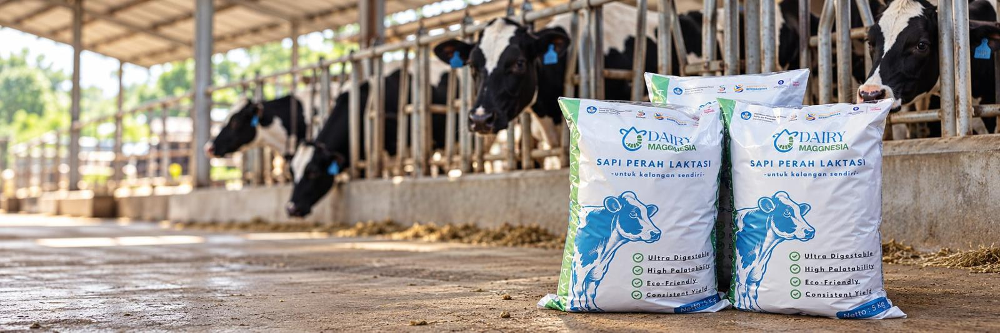

Kembali ke Berita & Artikel
Edukasi
Mau Mencoba Pakan Baru? Perhatikan 6 Hal Ini
Pelajari 6 hal yang perlu diperhatikan sebelum mencoba pakan baru untuk sapi perah, mulai dari kebutuhan ternak, transisi pakan, respons sapi, hingga efisiensi biaya.

Catatan prototype: naskah lengkap artikel ini belum tersedia. Area di bawah disiapkan untuk isi artikel, misalnya daftar bernomor untuk keenam poin. Isi tiap poin, nama penulis, dan tanggal terbit perlu dilengkapi tim konten.